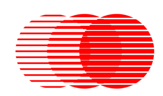

× Jorge Garcelán · Máster de Informática · 2026
Jorge Garcelán · Máster de Informática · 2026

Hace cuatro años no tenía ni idea de qué quería hacer. Os lo cuento de verdad, no la versión bonita.
▼Buscando prácticas para el máster, encontré la oferta en LinkedIn. Un rol que no conocía: técnico y de cara al cliente. Me apetecía probarlo.
Me preparé el proceso durante un par de semanas.
Solo tenía prácticas e investigación, así que las conté como si fueran un producto: qué valor aportaban, qué retos tuve y qué conseguí.
Eso fue lo que me diferenció.
Cuenta tus prácticas, tu investigación y tus proyectos como experiencia laboral: el valor, los retos y el resultado.
La pregunta no es «¿qué empresa es mejor?», sino «¿qué quiero aprender ahora?»
Nada de esto lo planeé: dije que sí a lo anterior. Escribidme por LinkedIn: puede ser vuestra próxima puerta.